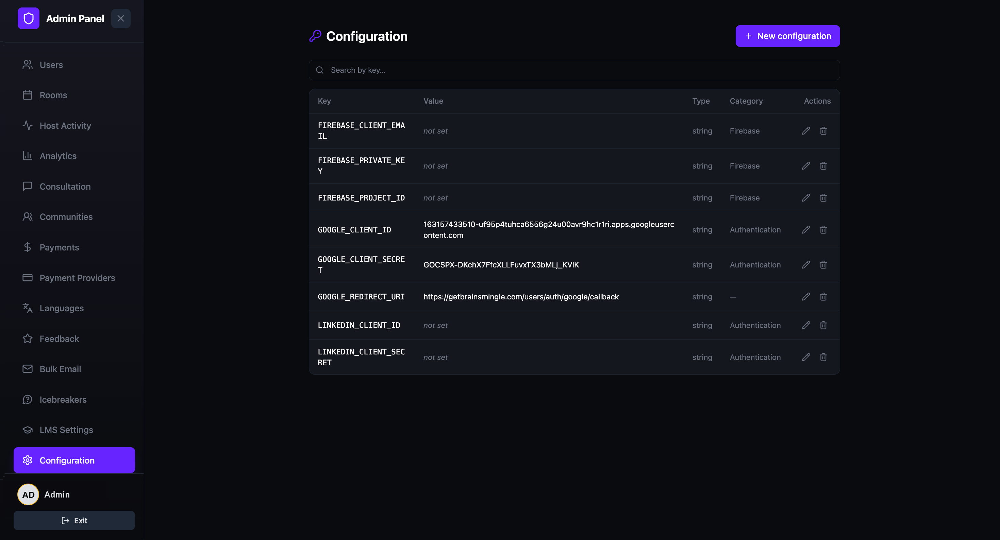
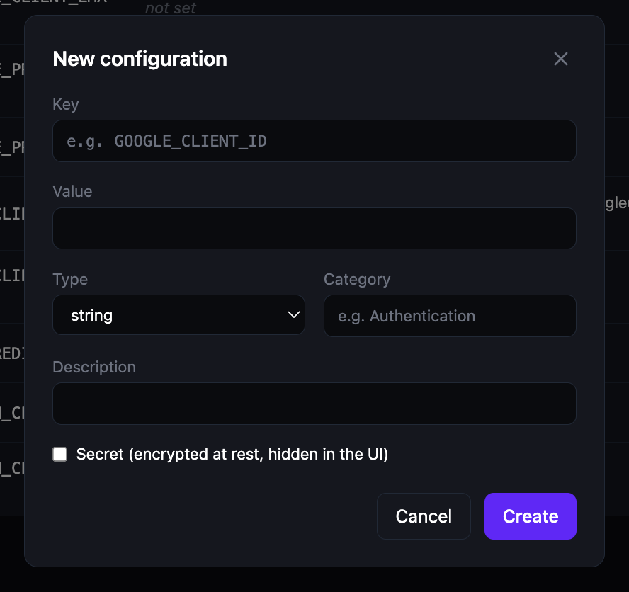

Platform configuration
View and manage platform-level configuration keys such as authentication credentials, Firebase settings, and third-party integrations. Each configuration entry is a key-value pair that controls a specific platform behavior.
Open the Configuration page
- Open the Admin Panel.
- Click Configuration in the left sidebar.
The Configuration page displays a searchable table of all configuration entries. Use the search bar to find a specific key by name.
Understand the configuration table
Each row in the table represents a single configuration entry:
| Column | Description |
|---|---|
| Key | The configuration key name (e.g. GOOGLE_CLIENT_ID, FIREBASE_PROJECT_ID). |
| Value | The current value of the key. Secret values are hidden and show "not set" when empty. |
| Type | The data type of the value (e.g. string). |
| Category | The grouping label for the key (e.g. Firebase, Authentication). |
| Actions | Two action buttons: Edit (pencil icon) to update the entry, and Delete (trash icon) to remove it. |

Add a new configuration
- Click + New configuration in the top-right corner.
- Fill in the configuration details:
- Key — a unique identifier in uppercase with underscores (e.g. GOOGLE_CLIENT_ID).
- Value — the configuration value.
- Type — select the data type from the dropdown (e.g. string).
- Category — a label to group related keys (e.g. Authentication, Firebase).
- Description — an optional note describing what the key controls.
- Secret — check this box to encrypt the value at rest and hide it in the UI.
- Click Create to save the entry, or Cancel to discard.

Edit or delete a configuration
- To edit a configuration, click the pencil icon in the entry's Actions column. Update the fields and save.
- To delete a configuration, click the trash icon in the entry's Actions column. The entry is permanently removed.
Important: Deleting or modifying configuration keys can affect platform functionality. Only change values if you understand their purpose.